一、前言
因而，每一生物的有机形体都是一个神圣的机器，或一台无限地优越于任何人造的自动机器的自然的自动机器（automata）。因为人的技艺所制造的机器的每一部分并非机器。……而自然的机器，即有机体，在其无限小的部分仍是机器。
—— 戈特弗里德·威廉·莱布尼茨《单子论》第 64 节
本章将从词法分析所用的 3 型文法入手，引入自动机的概念，并详细介绍有穷自动机的原理及实现。最终实现编译程序的词法分析模块。
二、正则文法的解析过程
在第 1 章的最后我们介绍了 3 型文法。3 型文法也称正则文法，特征是对于文法中的每一条规则，其右侧要么是一个终结符，要么是一个终结符加上一个非终结符，且非终结符只位于终结符的一侧。根据非终结符位置的不同分为左线性和右线性。
或许有些人会这样讲：“左线性是终结符在右侧；右线性是终结符在左侧”。但是这样实在太别扭了。应该说 “左线性是非终结符在左侧；右线性是非终结符在右侧”。
为什么通过这一约束，3 型文法就能区别于 2 型文法了呢？我们可以通过正则文法的解析过程来理解。
现在有一左线性正则文法 $G_1[Z]$：
$$ \begin{align*} Z & \rightarrow A1 \\ A & \rightarrow B1 | 1 \\ B & \rightarrow A0 \end{align*} $$现在可能不太能看得出来，但是 $G_1[Z]$ 能够接受符号串 $101011$。我们可以画出此符号串对应的文法树。
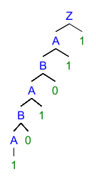
通过文法树我们可以看出，对于左线性正则文法 $G_1[Z]$，其文法树只向左增长。当然这一点从规则中也可以看出，只不过不那么直观罢了。
可为什么具有这样特性的文法就特殊了呢？接下来我们根据文法树，以归约的视角看待符号串 $101011$ 的解析过程：
- 读入
1，1归约得到A； - 读入
0，A0归约得到B； - 读入
1，B1归约得到A； - ……
以此类推，我们就可以发现其中的规律。对于这样的文法，读入一次即归约一次。因为文法中最多只有两个符号，所以一旦读入了一个新的符号，则必定进行一次归约。
同理的，我们考虑右线性正则文法 $G_2[S]$：
$$ \begin{align*} S & \rightarrow 1A \\ A & \rightarrow 0B | 1 \\ B & \rightarrow 1A \end{align*} $$$101011$ 也能被 $G_2[S]$ 接受。其文法树如下，对于右线性正则文法 $G_2[Z]$，其文法树只向右增长
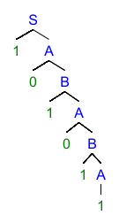
而这一次我们以推导的视角来看。文法树的生成过程应该是这样的：
S推导得到1A，输出1；A推导得到0B，输出0；B推导得到1A，输出1；- ……
其中规律是推导一次即输出一次。因为非终结符总是出现在左侧，所以每进行一步推导，当前句型左侧就多出一个非终结符。
由此我们可以看出，不管是左线性还是右线性，对于正则文法，符号串解析的每一步都只与目前唯一的非终结符和正在被解析的终结符有关。
正因为此，我们可以对正则文法做进一步的抽象。可将当前句型中唯一的非终结符视为当前的状态，由于解析了新的终结符而产生了状态的转移。
三、有穷自动机
这就引入了有限状态机的概念。有限状态机又称有穷自动机（Finite Automata），之后我们将使用有穷自动机这个名词。
有穷自动机是表示有限个状态以及在这些状态之间的转移和动作等行为的模型，可以使用图形表示。我们用圆圈表示状态，用圆圈间的箭头表示状态的转移，其中箭头上的字符表示进行这一状态转移所需要读入的字符。在有穷自动机还未读入任何字符时所处的状态称为开始状态，用一个小箭头指向该状态表示。另外还有接受状态，当有穷自动机处于该状态时，说明此前读入的符号串可被识别/接受，用两个同心圆表示。
“接受” 的概念来自文法，因为有穷自动机实际上就是用于判断正则文法是否接受符号串的机器。
下面一个有穷自动机的例子可以说明上述概念。
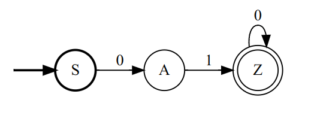
图是在这个网站画的。
图中 $S、A、Z$ 均是状态。状态 $S$ 有一个小箭头指向，因此是开始状态。状态 Z 有两个同心圆，因此是接受状态。状态 $S$ 与状态 $A$ 之间有一箭头从 $S$ 指向 $A$，同时箭头上有字符 $0$，说明处于状态 $S$ 时读入字符 $0$ 可以转移到状态 $A$。其他箭头的含义同理。
判断某一符号串是否可被有穷自动机接受十分简单。只需要让有穷自动机按顺序读入符号串的每一个符号，并根据箭头做状态转移，等到读入符号串的全部符号后，查看此时是否处于接受状态即可。如果处于接受状态，则证明该符号串可以被有穷自动机识别。
还以上图中的有穷自动机为例，对于符号串 $0100$，会经过 $S \rightarrow A \rightarrow Z \rightarrow Z$ 的状态转移。最终状态为接受状态。因此 $0100$ 可以被上图的有穷自动机接受。
根据上一章，我们得知对正则文法的推导或归约等同于状态的转移，因此正则文法实际上和有穷自动机等价。正则文法的推导或归约过程可以用有穷自动机实现。下面分别给出左线性和右线性文法构造有穷自动机的方法：
- 左线性：
- 对于左线性文法 $G_{L}[Z]$。将该文法中的每一个非终结符都视为状态，其中将开始符号 $Z$ 作为接受状态。并添加一个开始状态 $S$。
- 对于文法 $G_L$ 中形如 $Q \rightarrow Rt$ 其中 $Q,R \in V_n; t \in V_t$ 的规则，为有穷自动机添加由状态 $R$ 指向状态 $Q$ 的箭头，箭头上的符号为 $t$。
- 对于文法 $G_L$ 中形如 $Q \rightarrow t$ 其中 $Q \in V_n; t \in V_t$ 的规则，为有穷自动机添加由状态 $S$ 指向状态 $Q$ 的箭头，箭头上的符号为 $t$。
- 右线性：
- 对于左线性文法 $G_{R}[S]$。将该文法中的每一个非终结符都视为状态，其中将开始符号 $S$ 作为开始状态。并添加一个接受状态 $Z$。
- 对于文法 $G_R$ 中形如 $Q \rightarrow tR$ 其中 $Q,R \in V_n; t \in V_t$ 的规则，为有穷自动机添加由状态 $Q$ 指向状态 $R$ 的箭头，箭头上的符号为 $t$。
- 对于文法 $G_R$ 中形如 $Q \rightarrow t$ 其中 $Q \in V_n; t \in V_t$ 的规则，为有穷自动机添加由状态 $Q$ 指向状态 $Z$ 的箭头，箭头上的符号为 $t$。
由正则文法转换为有穷自动机的过程也反映了左线性进行归约、右线性进行推导的这一区别：对于左线性，状态转移箭头所指向的是规则左侧的非终结符对应的状态；而对于右线性，状态转移箭头所指向的是规则右侧的非终结符对于的状态。
据此我们就可以根据上一节中定义的两个正则文法构造有穷自动机。实际上这两个文法所对应的有穷自动机相同。
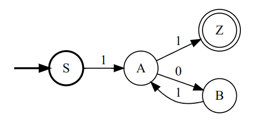
对于符号串 $101011$，经过 $S \rightarrow A \rightarrow B \rightarrow A \rightarrow B \rightarrow A \rightarrow Z$ 的状态转移过程，被此有穷自动机接受。
左线性文法的文法树中非终结符自底向上、或右线性文法的文法树中非终结符自顶向下，所组成的序列与在有穷自动机中状态转移过程得到的状态序列相同，都是 $SABABAZ$。除了开始状态或接受状态可能不存在。
目前为止，有穷自动机看似十分简单，其实是因为我们只考虑了最简单的情况。让我们再考虑下面的正则文法 $G[S]$：
$$ \begin{align*} S & \rightarrow 0A | 1B | 1 \\ A & \rightarrow \epsilon \\ B & \rightarrow 0S \end{align*} $$这是一个右线性文法，我们可以按照上面提到的方法将其构造成有穷自动机。如下图所示，图中的 $ 指空符号串 $\epsilon$。
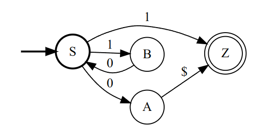
看似没有什么特别的。但是如果现在我问一些问题，就会发现这个有穷自动机有着很多奇怪的地方。
比如说，$1$ 能够被这一有穷自动机接受吗？因为文法中存在规则 $S \rightarrow 1$，所以肯定可以被接受。但是从有穷自动机图中看来，初始状态为 $S$，读入 $1$ 之后却可以从两个不同的箭头转移到不同的状态。既可以是接受状态 $Z$，也可以是普通状态 $B$。这样又要如何判断哪个状态是正确的呢？
又比如说，$0$ 能够被这一有穷自动机接受吗？从有穷自动机图中看来，初始状态为 $S$，读入 $0$ 之后转移到状态 $A$。但是状态 $A$ 到状态 $Z$ 之间存在一个箭头，其上的符号为 $\epsilon$，这意味着不读入符号也可以进行状态转移。那么读入 $0$ 之后的状态究竟应该是 $A$ 还是 $Z$ 呢？
要回答这样的问题，我们不能再使用不严谨的语言了。下面我们需要将有穷自动机以数学的语言加以形式化。
四、有穷自动机的形式化
（1）有穷自动机的定义
在形式上，有穷自动机分为两类，分别是确定的有穷自动机（DFA, Deterministic Finite Automata）和 不确定的有穷自动机（NFA, Nondeterministic Finite Automata）。
本文第一和第二个图所展示的有穷自动机为 DFA。DFA $M$ 可以由一个五元组表示：
$$ M = (S, \Sigma, \sigma, s_0, Z) $$其中
- $S$ 表示有穷状态集。
- $\Sigma$ 表示输入字符的集合，也即字母表，注意 $\epsilon \notin \Sigma$
- $\sigma$ 为状态转移函数，其中 $\sigma: S \times \Sigma \rightarrow S$。
- $s_0$ 表示初始状态，其中 $s_0 \in S$。
- $Z$ 表示接受状态集，其中 $Z \subseteq S$。
由于状态转移函数 $\sigma$ 的两个自变量的取值范围均有穷且离散，所以我们可以用一个二维表格表示状态转移函数，这一表格称为有穷自动机的状态转移矩阵。表格的第一行和第一列表示两个自变量，其余部分表示状态转移后的取值。还举如下的有穷自动机为例，我们给出其状态转移矩阵。
$0$ $1$ $S$ $A$ $\phi$ $A$ $\phi$ $Z$ $Z$ $Z$ $\phi$ $\phi$ $\phi$ $\phi$ 注意这里增加了一个自动机中不存在的新状态 $\phi$。这是为了填补状态转移矩阵中无法接受的符号造成的空缺，代表一个永远不被接受的状态。可以称其为死状态。当然为了方便，我们也可以直接将 $\phi$ 处留空。
通过 DFA 的形式化定义，我们可以定义 DFA 所接受的符号串：对于 DFA $M$，令 $a = a_1a_2... a_n, a \in \Sigma^*$，若存在 $\sigma(...\sigma(\sigma(s_0, a_1), a_2)..., a_n) = s_n$ 且 $s_n \in Z$，则称 $a$ 可被 $M$ 接受。
如果我们记 $\sigma(...\sigma(\sigma(s_0, a_1), a_2)..., a_n) = s_n$ 为 $\sigma(s_0, a) = s_n$。则 DFA $M$ 所接受的语言可以表示为 $L(M) = \{a | \sigma(s_0, a) = s_n, s_n \in Z, a \in \Sigma^* \}$
而如果在 DFA 的基础上放宽一些限制条件，我们就得到了 NFA。本文第三个图所展示的有穷自动机为 NFA，这也是该有穷自动机和之前的性质有所不同的原因。NFA $M'$ 同样可由一个五元组表示：
$$ M' = (S, \Sigma \cup \{\epsilon\}, \sigma', s_0, Z) $$其中
- $S$ 表示有穷状态集，与 DFA 相同。
- $\Sigma$ 表示字母表加上 $\epsilon$，这意味着 NFA 所接受的符号包括空字符。
- $\sigma$ 为状态转移函数，其中 $\sigma: S \times \Sigma \cup \{\epsilon\} \rightarrow 2^S$。（$2^S$ 是 $S$ 的幂集，即 $S$ 的所有可能子集的集合。这意味着 NFA 的 $\sigma$ 的取值为集合 $S' \subseteq S$ 而非 $s \in S$。）
- $s_0$ 表示初始状态，其中 $s_0 \in S$，与 DFA 相同。
- $Z$ 表示接受状态集，其中 $Z \subseteq S$，与 DFA 相同。
由此我们可以看出，NFA 相较于 DFA 放宽的条件有两处：
- 将 $\epsilon$ 加入到接受符号中，由于对任意 $a = a_1 a_2 ... a_n, a \in \Sigma^*$ ，对任意的 $i \in [0, n]$，有 $a_1 ... a_i \epsilon a_{i+1}...a_n = a_1...a_i a_{i+1} ... a_n = a$。这意味着在任意时刻 NFA 都可以无条件的读入 $\epsilon$ 进行状态转移。
- $\sigma$ 的值域为 $2^S$，这意味着一次状态转移有多个不同的状态可以选择，而非只能转移到单一状态。
NFA 放宽了条件，也为理解和使用带来了困难。可以无条件读入 $\epsilon$，那么什么时候读入是合理的呢？允许状态转移后有多个状态，那么哪一个状态才是当前状态？终止条件又要如何确定？
为了解答这些问题，我们要形式化地定义 NFA 所接受的符号串。对于 NFA $M'$，我们定义 $\sigma': 2^S \times \Sigma \cup \{\epsilon\} \rightarrow 2^S$，其中对于 $\sigma'(S'_{i-1}, a'_i) = S'_i$，有 $S'_i = \bigcup_{s'_{i-1} \in S'_{i-1}} \sigma(s'_{i-1}, a'_i)$。
则对于符号串 $a \in \Sigma^*$，若存在 $a' \in (\Sigma \cup \{\epsilon\})^*$ 且 $a = a'$。存在 $\sigma'(...\sigma'(\sigma'(\{s_0\}, a'_1), a'_2)..., a'_n) = S'_n$ 且 $S'_n \cap Z \ne \emptyset$，则称 $a$ 可被 $M'$ 接受。
也可以这样理解 NFA 所接受的符号串：在每次尝试读取符号并进行状态转移时，可以选择读入 $\epsilon$ 或下一个符号；在状态转移过后，也可以选择状态集中某个状态作为当前状态。在这样不同选择所组成的不同路径中，如果存在这样一条路径，在读完符号串所有符号后转移到了某个接受状态，则判定 NFA 接受了该符号串。
与 DFA 类似，如果我们记 $\sigma'(...\sigma'(\sigma'(\{s_0\}, a'_1), a'_2)..., a'_n) = S'_n$ 为 $\sigma(\{s_0\}, a) = S'_n$。则 NFA $M'$ 所接受的语言可以表示为 $L(M') = \{a | \sigma(\{s_0\}, a) = S'_n, S'_n \cap Z \ne \emptyset, a \in \Sigma^* \}$。
NFA 同样可以使用状态转移矩阵，只不过这一次表格中的取值变为了状态集而非单一状态。
（2）NFA 的确定化
DFA 的状态转移实现起来较为简单，只需要维护唯一的当前状态，每一步读入符号都根据规则更改当前状态即可。而 NFA 的实现就稍显复杂了。首先，每一次状态转移都有许多可能的目标状态，当然我们可以选择保留每一次状态转移得到的所有状态，只不过这一状态集可能会十分庞大。其次，NFA 在任何时刻都可能读入 $\epsilon$，这种不确定性又要如何解决？
我们要消除 $\epsilon$ 带来的不确定性。可以再次审视 NFA 中每一步状态转移得到的状态集合：该集合实际上表示的是当前所有可能的状态。此时如果我们选择读入 $\epsilon$，那么状态集合会发生变化，但是实际上我们并没有读入符号串中的符号。因此读入下一个符号串中的符号之前所有可能的状态和当前所有可能的状态并不相同，前者包括了后者以及在后者基础上不断读入 $\epsilon$ 所得到的所有新的状态。如果我们能找到前者的计算方法，那么我们就能从 NFA 中消除不确定位置的 $\epsilon$。
这里要引入 ε-闭包（ε-closure）的概念。对于 NFA $M'$，令 $I \subseteq S$，则其 ε-闭包为 $\text{ε-closure}(I) = I \cup \text{ε-closure}(\sigma'(I, \epsilon))$ 其中 $\text{ε-closure}(\emptyset) = \emptyset$。
ε-闭包是状态机图关于 $\epsilon$ 边的传递闭包。
对第 $i$ 步使用 $\sigma'$ 进行状态转移得到状态集合 $S_i$，我们只要对其求 ε-闭包得到 $S'_i = \text{ε-closure}(S_i)$，之后再用 $S'_i$ 执行状态转移，读入下一个非 $\epsilon$ 符号得到 $S_{i+1}$。这样就消除了 NFA 中 $\epsilon$ 带来的不确定性。
如此一来，我们就得到了 NFA $M'$ 的状态转移的实现方法：
- 维护一个当前状态集合，并设置初始状态集合为 $S'_0 = \text{ε-closure}(\{s_0\})$；
- 读入下一个符号串中的符号 $a'_i$，得到第 $i$ 步的状态集合 $S'_i = \text{ε-closure}(\sigma'(S'_{i-1}, a'_i))$；
- 不断重复第 2 步，直到读入了所有符号串中的符号，此时得到状态集合 $S'_n$；
- 若 $S'_n \cap Z \ne \emptyset$，则此 NFA 接受该符号串，否则不接受。
根据上面的方法，如果我们将其中所有可能出现的状态集合分别视作不同的状态（$s''_i := S'_i$），则我们可以构造一个新的有穷自动机 $M''$。并且由于该有穷自动机中不存在 $\epsilon$；同时状态转移函数 $\sigma''(s''_{i-1}, a'_i) := \text{ε-closure}(\sigma'(S'_{i-1}, a'_i))$ 的取值唯一，所以 $M''$ 还是 DFA。
也就是说对于给定的 NFA，我们总能通过一种方法将其构造成一个 DFA。这意味着 NFA 与 DFA 从功能上来说是等价的。将一个 NFA 转化为 DFA 的过程称为 NFA 的确定化。
自动机 $M_1$ 和 $M_2$ 等价指 $L(M_1) = L(M_2)$。
下面给出 NFA 确定化的算法：
想要将 NFA $M = (S, \Sigma \cup \{\epsilon\}, \sigma, s_0, Z)$ 确定化为 DFA $M' = (S', \Sigma, \sigma', s'_0, Z')$。
- 初始化 $s'_0 := \text{ε-closure}(\{s_0\})$，$S' = \{s'_0\}$，$S'_{\text{new}} := S'$，$\sigma' = \emptyset$，$Z' = \emptyset$；
- 对任意 $s'_{\text{new}} \in S'_{\text{new}}$，令 $S'_{\text{new}} := S'_{\text{new}} - \{s'_{\text{new}}\}$，对任意 $a \in \Sigma$，令 $s'_\sigma := \text{ε-closure}(\sigma(s'_{\text{new}}, a))$，$\sigma' := \sigma' \cup \{(s'_{\text{new}}, a) \rightarrow s'_\sigma \}$；
- 若 $s'_\sigma \notin S'$，则令 $S'_{\text{new}} := S'_{\text{new}} \cup \{s'_\sigma\}$，$S' := S' \cup \{s'_\sigma\}$。若 $Z \cap s'_\sigma \ne \emptyset$，则令 $Z' := Z' \cup \{s'_\sigma\}$；
- 重复 2、3 步，直到 $S'_{\text{new}} = \emptyset$。
这样说似乎有些太过抽象。让我们以上文中我们构造的 NFA 为例。
算法的目标是构建一个 DFA，其中最主要的就是构建 DFA 的状态转移函数 $\sigma'$。所以我们可以使用状态转移矩阵表示算法过程。
最开始，我们的 $S'_{\text{new}} := \{\{S\}\}$，这时我们在表格 $T$ 中添加 $\{S\}$ 状态所对应的行。由于还未对 $\{S\}$ 进行处理，所以其状态转移后的目标状态暂时为空。
| $0$ | $1$ | |
|---|---|---|
| $\{S\}$ | - | - |
之后我们求 $\{S\}$ 转移后的目标状态集。有 $\text{ε-closure}(\sigma(\{S\}\, 0)) = \{A,Z\}$（注意计算 ε-闭包）。因此我们在 $T[\{S\},0]$ 的位置填入 $\{A,Z\}$，并添加 $\{A,Z\}$ 对应的行。同理我们对符号 $1$ 也进行操作。最终表格状态如下。
| $0$ | $1$ | |
|---|---|---|
| $\{S\}$ | $\{A,Z\}$ | $\{B,Z\}$ |
| $\{A,Z\}$ | - | - |
| $\{B,Z\}$ | - | - |
此时 $S'_{\text{new}} := \{ \{A,Z\}, \{B,Z\} \}$。我们同样依次对 $\{A,Z\}$ 和 $\{B,Z\}$ 求转移后的状态集。
对于 $\{A,Z\}$，我们得到了两个空集
| $0$ | $1$ | |
|---|---|---|
| $\{S\}$ | $\{A,Z\}$ | $\{B,Z\}$ |
| $\{A,Z\}$ | $\emptyset$ | $\emptyset$ |
| $\{B,Z\}$ | - | - |
对于 $\{B,Z\}$，有 $T[\{B,Z\},0] = \{S\}$。但由于 $\{S\}$ 已经在表格中了，所以不需要添加额外的行。此时表格中所有位置都填写完成，相当于 $S'_{\text{new}} = \emptyset$。算法停止。
| $0$ | $1$ | |
|---|---|---|
| $\{S\}$ | $\{A,Z\}$ | $\{B,Z\}$ |
| $\{A,Z\}$ | $\emptyset$ | $\emptyset$ |
| $\{B,Z\}$ | $\{S\}$ | $\emptyset$ |
除了表格之外，我们还可得到初始状态 $s'_0 = \{S\}$。并且由于 $Z \in \{A,Z\}, Z \in \{B,Z\}$，所以 $Z' = \{ \{A,Z\}, \{B,Z\} \}$。
我们可以将上述表格中的各状态替换成方便阅读的形式。令 $\{S\} \rightarrow S, \{A,Z\} \rightarrow A, \{B,Z\} \rightarrow B, \emptyset \rightarrow \phi$。得到：
| $0$ | $1$ | |
|---|---|---|
| $S$ | $A$ | $B$ |
| $A$ | $\phi$ | $\phi$ |
| $B$ | $S$ | $\phi$ |
| $\phi$ | $\phi$ | $\phi$ |
其中初始状态为 $S$，接受状态集为 $\{A,B\}$
（3）DFA 的最小化
在上一小节中，我们描述了 NFA 确定化为 DFA 的方法。但是也并非所有的 DFA 都是其最简的等价形式。我们可以考虑如下的 DFA：
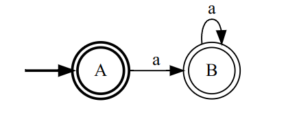
很明显，该 DFA 可接受 0 个或多个 $a$ 组成的符号串。但是该 DFA 并不是接受该语言的状态数最少的 DFA，因为下面的 DFA 同样能够接受：
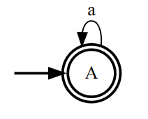
因此 DFA 之间亦有区别。可以证明，对于任意一个 DFA，存在一个唯一的状态最少的等价的 DFA。将一个 DFA 转化为等价的状态最少的 DFA 的动作称为 DFA 的最小化，也称为 DFA 的化简。如果一个 DFA 是所有等价 DFA 中状态最少的，则称其是最小化的或化简的。
一个 DFA 是化简的的充分必要条件是该 DFA 中没有多余状态且没有等价状态。
- 多余状态指 DFA 中不可达的状态，可以类比文法理论中多余规则中的不活动规则
- 等价状态指 DFA 中表现相同的不同状态。即对于任何相同输入，都转移到相同的状态或其他等价状态的不同状态。因为表现相同，所以等价的不同状态可以合并为同一个状态，而不会影响 DFA 所表达的语言。更准确的说，两个状态 $s$ 和 $t$ 等价需要满足如下两个条件：
- 一致性条件：状态 $s$ 和 $t$ 必须同时为接受状态或不为接受状态。（由于只有接受状态可以接受符号串，所以接受状态和非接受状态必定不等价。）
- 蔓延性条件：对于任意输入符号，状态 $s$ 和 $t$ 必须转换到等价的状态。（满足这一条件意味着状态 $s$ 和 $t$ 表现完全相同，可以相互替换。）
由于等价的状态至少由两个或更多状态组成，所以将等价状态合并为同一个状态的操作必然使得 DFA 的状态数量减少。所以没有多余状态的 DFA 的状态数一定小于任何有多余状态的等价的 DFA。即没有多余状态的 DFA 一定比任何有多余状态的等价的 DFA 更简。
由此我们可以得出将 DFA 最小化的方法。
- 首先，我们要求对于 DFA 状态机图中的任意状态，从开始状态是否可达。如果不可达则为多余状态，将其删去即可。这只需要计算状态机图的传递闭包。
- 之后，我们需要将 DFA 中的所有状态划分为不同的等价状态集，同一集合中的状态相互等价。并进行状态合并，将等价状态集中状态视为一个状态，构造最小化的 DFA。
上述过程并不复杂。现在唯一的问题就是 “如何将状态划分为不同的等价状态集”。我们知道两个状态等价意味着这两个状态对于相同的输入都转移到相同的状态或其他等价状态。这意味着要判定当前状态等价还要先判定当前状态转移后的状态是否等价。所以简单的两两判断不能解决这一问题。
下面介绍的一种判定等价状态集的方法可以称为分割法（Moore）。思路是假定不同状态属于同一个等价状态集，再根据集合中状态转移后结果的不同重新划分集合。不断重复，得到最终结果。具体方法描述如下：
- 首先根据一致性条件，我们将所有状态划分为两个不同的等价状态集 $S^{(0)}_0 = \{s | s \in Z \}$ 和 $S^{(0)}_1 = \{s | s \in S \land s \notin Z \}$。（$S$ 为状态集，$Z$ 为接受状态集）
- 在第 $i$ 次迭代中，对上一次迭代中得到的等价状态集划分中的任意等价状态集 $S^{(i-1)}_j$，对其中的任意状态 $s \in S^{(i-1)}_j$ 求其输入任意符号 $c \in \Sigma$ 后转移到的状态所在的等价状态集 $S^{(i-1)}_{s,c}$。（即有 $\sigma(s, c) \in S^{(i-1)}_{s,c}$）。
- 根据蔓延性条件，如果属于同一等价状态集中的两个状态 $s,t \in S^{(i-1)}_j$，其读入任意符号后转移到的状态所在的状态集 $S^{(i-1)}_{s, c_1}, ...S^{(i-1)}_{s, c_n}$ 和 $S^{(i-1)}_{t, c_1}, ...S^{(i-1)}_{t, c_n}$ 完全相同，则在第 $i$ 次迭代中将 $s$ 和 $t$ 划分到同一个等价状态集 $S^{(i)}_k$。照此方法得到第 $i$ 次迭代的等价状态集划分。
- 重复 2、3 步，直到等价状态集划分不再发生变化。
这一方法很容易以表格的方式演算。我们只需要在 DFA 的状态转移矩阵的后面添加多个新列，用于表示每一步迭代时不同状态被划分到的等价状态集。使用不同数字表示不同的等价状态集，相同数字的状态位于同一个等价状态集中。
我们就以下面的 DFA 为例演示这一方法的具体操作。
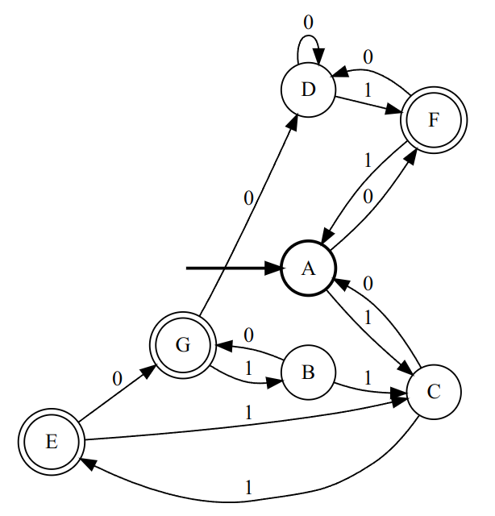
我们最好先将其转化为状态转移矩阵
| $0$ | $1$ | |
|---|---|---|
| $A$ | $F$ | $C$ |
| $B$ | $G$ | $C$ |
| $C$ | $A$ | $E$ |
| $D$ | $D$ | $F$ |
| $E$ | $G$ | $C$ |
| $F$ | $D$ | $A$ |
| $G$ | $D$ | $B$ |
随后，我们按照方法中第 1 步将所有状态划分为两个等价状态集（这里分别用 $1$ 和 $2$ 表示）。
| $0$ | $1$ | $S^{(0)}$ | |
|---|---|---|---|
| $A$ | $F$ | $C$ | $1$ |
| $B$ | $G$ | $C$ | $1$ |
| $C$ | $A$ | $E$ | $1$ |
| $D$ | $D$ | $F$ | $1$ |
| $E$ | $G$ | $C$ | $2$ |
| $F$ | $D$ | $A$ | $2$ |
| $G$ | $D$ | $B$ | $2$ |
虽然本例没有涉及，但是状态转移矩阵中可能出现 $\phi$ 状态。$\phi$ 状态不是接受状态，因此应当和其他非接受状态划分到同一个集合中。
接下来我们进行第 $1$ 次迭代，首先我们查看状态 $A$ 这一行:
- 如果读入 $0$，将会转移到状态 $F$，该状态属于等价状态集 $2$；
- 如果读入 $1$，将会转移到状态 $C$，该状态属于等价状态集 $1$。
这里介绍本人所使用的小技巧。在进行第 $i$ 次迭代时，可以在 $S^{(i-1)}$ 一列的数值的角标处标记读入符号后转移到的状态所在的状态集。这样可以方便后续判断是否相同。对于状态 $A$ 这一行，我们可以将 $1$ 改为 $1_{2,1}$。
| $0$ | $1$ | $S^{(0)}$ | |
|---|---|---|---|
| $A$ | $F$ | $C$ | $1_{2,1}$ |
| $B$ | $G$ | $C$ | $1$ |
| $C$ | $A$ | $E$ | $1$ |
| $D$ | $D$ | $F$ | $1$ |
| $E$ | $G$ | $C$ | $2$ |
| $F$ | $D$ | $A$ | $2$ |
| $G$ | $D$ | $B$ | $2$ |
同理我们也对其他行做相同的处理。
| $0$ | $1$ | $S^{(0)}$ | |
|---|---|---|---|
| $A$ | $F$ | $C$ | $1_{2,1}$ |
| $B$ | $G$ | $C$ | $1_{2,1}$ |
| $C$ | $A$ | $E$ | $1_{1,2}$ |
| $D$ | $D$ | $F$ | $1_{1,2}$ |
| $E$ | $G$ | $C$ | $2_{2,1}$ |
| $F$ | $D$ | $A$ | $2_{1,1}$ |
| $G$ | $D$ | $B$ | $2_{1,1}$ |
此时我们将 $S^{(0)}$ 一列中内容相同的行划分到同一个等价状态集中，得到新的一列 $S^{(1)}$。
| $0$ | $1$ | $S^{(0)}$ | $S^{(1)}$ | |
|---|---|---|---|---|
| $A$ | $F$ | $C$ | $1_{2,1}$ | $1$ |
| $B$ | $G$ | $C$ | $1_{2,1}$ | $1$ |
| $C$ | $A$ | $E$ | $1_{1,2}$ | $2$ |
| $D$ | $D$ | $F$ | $1_{1,2}$ | $2$ |
| $E$ | $G$ | $C$ | $2_{2,1}$ | $3$ |
| $F$ | $D$ | $A$ | $2_{1,1}$ | $4$ |
| $G$ | $D$ | $B$ | $2_{1,1}$ | $4$ |
继续迭代，我们得到新的一列 $S^{(2)}$。
| $0$ | $1$ | $S^{(0)}$ | $S^{(1)}$ | $S^{(2)}$ | |
|---|---|---|---|---|---|
| $A$ | $F$ | $C$ | $1_{2,1}$ | $1_{4,2}$ | $1$ |
| $B$ | $G$ | $C$ | $1_{2,1}$ | $1_{4,2}$ | $1$ |
| $C$ | $A$ | $E$ | $1_{1,2}$ | $2_{1,3}$ | $2$ |
| $D$ | $D$ | $F$ | $1_{1,2}$ | $2_{2,4}$ | $3$ |
| $E$ | $G$ | $C$ | $2_{2,1}$ | $3$ | $4$ |
| $F$ | $D$ | $A$ | $2_{1,1}$ | $4_{2,1}$ | $5$ |
| $G$ | $D$ | $B$ | $2_{1,1}$ | $4_{2,1}$ | $5$ |
$S^{(1)}$ 中等价状态集 $3$ 中只有 $E$ 一个状态，不可能继续拆分，所以不需要标注角标。
继续迭代，得到 $S^{(3)}$。此时可以发现 $S^{(3)}$ 得到的划分和 $S^{(2)}$ 相同，停止迭代。
| $0$ | $1$ | $S^{(0)}$ | $S^{(1)}$ | $S^{(2)}$ | $S^{(3)}$ | |
|---|---|---|---|---|---|---|
| $A$ | $F$ | $C$ | $1_{2,1}$ | $1_{4,2}$ | $1_{5,2}$ | $1$ |
| $B$ | $G$ | $C$ | $1_{2,1}$ | $1_{4,2}$ | $1_{5,2}$ | $1$ |
| $C$ | $A$ | $E$ | $1_{1,2}$ | $2_{1,3}$ | $2$ | $2$ |
| $D$ | $D$ | $F$ | $1_{1,2}$ | $2_{2,4}$ | $3$ | $3$ |
| $E$ | $G$ | $C$ | $2_{2,1}$ | $3$ | $4$ | $4$ |
| $F$ | $D$ | $A$ | $2_{1,1}$ | $4_{2,1}$ | $5_{3,1}$ | $5$ |
| $G$ | $D$ | $B$ | $2_{1,1}$ | $4_{2,1}$ | $5_{3,1}$ | $5$ |
根据结果，我们可以得知状态 $A$ 和 $B$ 以及 $F$ 和 $G$ 分别为等价状态。根据此结果，我们可以最小化该 DFA。
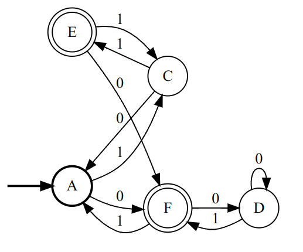
五、词法分析子程序
（1）正则表达式
在上一篇文章中，我们介绍了编译程序的各个逻辑阶段，指出词法分析阶段的工作就是用 3 型文法定义词成分，并使用有穷自动机将符号串划分为词。
虽然使用 3 型文法或有穷自动机都可以定义词，但是我们更多使用正则表达式（Regular Expression）进行定义。正则表达式是正则文法的一种更加简介的表示方式。我们可以这样定义正则表达式：
在符号集 $\Sigma$ 中：
- 匹配：若 $a \in \Sigma$，则单个符号促成的符号串 $a$ 是正则表达式。且 $\epsilon$ 也是正则表达式。
- 拼接：若 $s$ 和 $t$ 是正则表达式，则 $s \cdot t$（简写为 $st$） 也是正则表达式。
- 选择：若 $s$ 和 $t$ 是正则表达式，则 $s|t$ 也是正则表达式。
- 重复：若 $s$ 是正则表达式，则 $s^*$ 也是正则表达式。
$\Sigma$ 上的任意正则表达式由上述规则生成。
注意正则表达式是表达式。我们定义运算符号优先级由高到低依次为 “${}^*$“、”$\cdot$“ 和 ”$|$“。并使用括号符号 ”$($“、“$)$” 改变优先级。
若定义正则表达式 $r$ 的语言为 $L(r)$，则 $L(r)$ 的计算方法如下：
- 匹配：若 $r = a, a \in \Sigma \cup \{\epsilon\}$，则 $L(e) = \{a\}$。
- 拼接：若 $r = st$，则 $L(r) = L(s) \cdot L(t)$。
- 选择：若 $r = s | t$，则 $L(r) = L(s) \cup L(t)$。
- 重复：若 $r = s^*$，则 $L(r) = L(s)^*$。
由此可见，正则表达式中的运算符号实际上对应了符号串的运算。
可以证明，正则表达式与正则文法以及有穷自动机等价。任意正则表达式都可以按照如下规则转化为 NFA（Thompson 算法）：
并且由于 NFA 的确定化以及 DFA 的最小化，任意正则表达式都对应唯一一个状态数最小的 DFA。
-
匹配：若 $r = a, a \in \Sigma \cup \{\epsilon\}$，则构造 NFA：
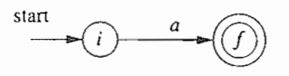
-
拼接：若 $r = st$，则构造 NFA：
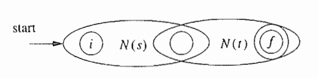
其中 $N(s)$ 和 $N(t)$ 分别表示正则表达式 $s$ 和 $t$ 对应的 NFA。椭圆中的两个圆圈代表 NFA 的开始状态和接受状态。此图意指将 $N(s)$ 的接受状态和 $N(t)$ 的开始状态合为同一状态。
-
选择：若 $r = s | t$，则构造 NFA：
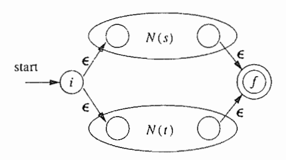
-
重复：若 $r = s^*$，则构造 NFA：
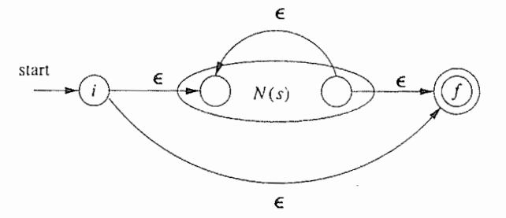
需要注意在上图所示 NFA 中出现了从状态 $i$ 到状态 $f$ 的箭头。这一箭头代表了重复 0 次时状态转移的路径。
此部分一系列图片出自 Compilers: Principles, Techniques, and Tools (Second Edition)
（2）正则表达式匹配程序的结构
正则表达式常常用于定义符号串模式，因而广泛用于符号串或词的匹配。正则表达式匹配程序通常包括两个阶段：
- 构建阶段：给定由正则表达式表示的词的定义（词法），构建有穷自动机；
- 解析阶段：对于输入的符号序列，将其划分为不同的符号串，并标记符号串所对应的词类型。
在编译器中，词法是固定不变的。因而会将构建阶段和解析阶段分为两个不同的程序。前者称为词法分析程序生成器（Lexical Analyser Generator），负责生成（编译出）后者；后者则是真正的词法分析子程序，是编译器的组成部分。常用的词法分析程序生成器为 flex，该程序能够按照定义的正则表达式生成对应的 C 语言词法分析程序。
而其他时候，正则表达式可能由用户输入，如
grep、awk等命令。这时在程序中必须同时包括构建阶段和解析阶段。各类语言的正则表达式库也常常采用这种模式。当然这不是本篇文章的重点，所以就此略过。不过在代码实现中，我们会采用这种模式而非前一种。
（3）有穷自动机的构建
构建阶段中，程序可能会接受单一正则表达式（一般的符号串匹配）或一组正则表达式（词法分析），可能会选择构建 NFA 或者 DFA，但不管怎么样，结果一定是产生唯一的有穷自动机。
让我们先假设构建 NFA。对于单一正则表达式，我们很容易处理。假设正则表达式为 $r$，其 NFA 为 $N(r)$，则 $N(r)$ 就是最终的结果。但是对于一组正则表达式 $r_1, r_2, ..., r_n$，情况就略有不同。
尽管对于这一组中的每一个正则表达式 $r_i$，我们都可以生成其对应的 NFA $N(r_i)$，但是我们只需要一个 NFA。这需要对这些 NFA 进行合并。合并的方法是引入一个开始状态 $s_0$，并使用 $\epsilon$ 箭头指向每一个 NFA 原本的开始状态。
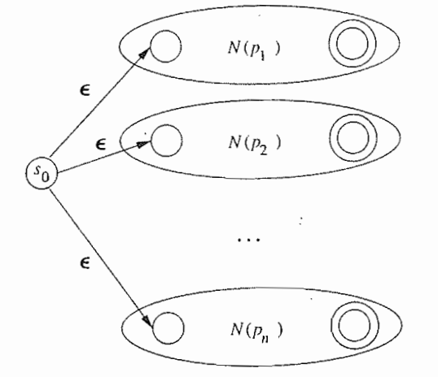
这时我们还需要区别每一个不同的原 NFA 中的接受状态。因为这些接受状态所接受的正则表达式并非同一个。这样当后续我们的词法分析子程序根据此有穷自动机接受符号串时，可以根据接受状态的不同判断实际接受的是哪一个正则表达式（或词的定义）。
不过还有一个问题，在 NFA 中接受的标准是当前状态集中至少有一个接受状态。这意味着在接受时也可能有多于一个接受状态。然而，这些接受状态又可能属于不同的正则表达式。
如果这出现在词法分析中，就意味着我们的词法具有二义性。一个解决办法是拒绝这样的词法定义，而另一种办法是选取定义在前的词作为接受时的类别。
而如果我们选择构建 DFA 而非 NFA，那么只不过需要额外经过确定化和最小化的过程。唯一的问题依旧是多个接受状态可能属于不同正则表达式。此时我们也可以采用上述的处理办法。
最终我们构建出唯一的有穷自动机。之后我们就可以将该有穷自动机的信息传递给下一个阶段。不论是生成另一个程序还是在同一个程序中执行下一阶段。
（4）词法分析子程序的解析过程
词法分析程序生成器构建了有穷自动机，并据此生成了词法分析子程序。词法分析子程序则根据有穷自动机的结构，不断读入符号并进行状态转移，从而实现词的解析。但是问题没有那么简单。
我们可以举一个例子，对于正则表达式 $a*$，我们希望其匹配 $aaabbb...$ 中满足条件的符号串。那么结果应该是什么呢？许多人的第一反应应该是 $aaa$，但是实际上 $\epsilon$、$a$、$aa$ 同样可以被该正则表达式接受。由此看来，在匹配中我们不止需要符号串满足条件，还希望符号串能 “更加完整”：使一次匹配的符号串尽可能长。这就要求我们在解析阶段能够实现正则表达式的最长匹配（或称贪婪匹配）。
因此，我们不能在第一次转移到接受状态时便接受此时的符号串，而是要尽可能多地读入符号。所谓尽可能多，指的是不断读入符号串，直到有穷自动机转移到死状态。在此过程中，可能有不止一次转移到接受状态。我们要做的就是选取最后一次转移到接受状态时的符号串作为匹配的符号串。这样就实现了最长匹配。
如果在到达死状态之前不存在转移到接受状态的时刻，则说明不存在任何匹配的符号串，这时应该报错。
另外，在最长匹配时，一次匹配过程直到转移到死状态才停止，这使得最后一次转移到接受状态后还可能读入许多符号。因此我们还需要回退额外读取的符号，并在匹配下一个符号串时重新读入。
六、有穷自动机及词法分析子程序的实现
未完待续